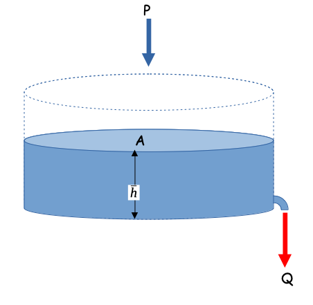
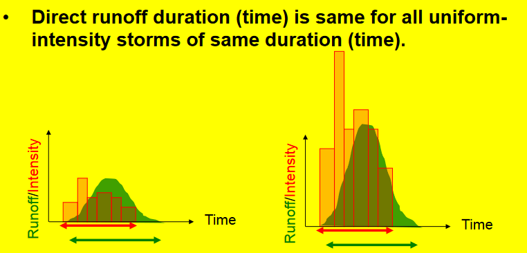
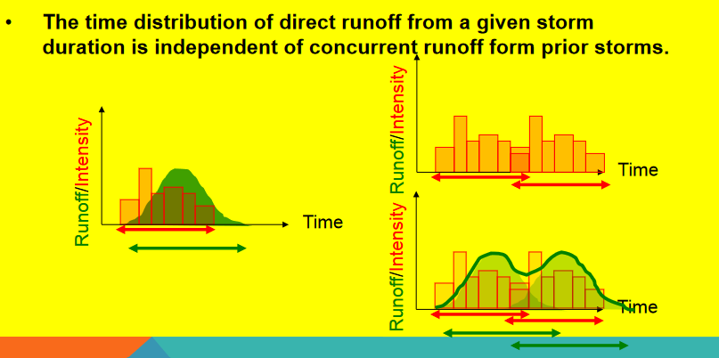
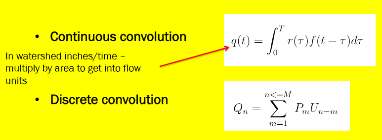
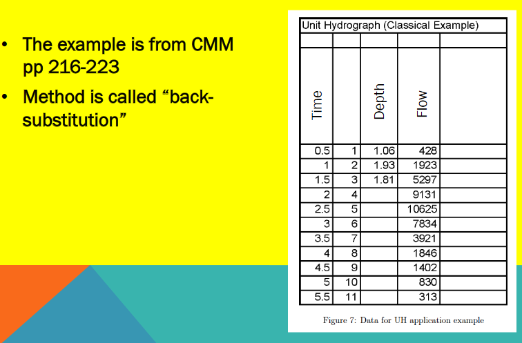
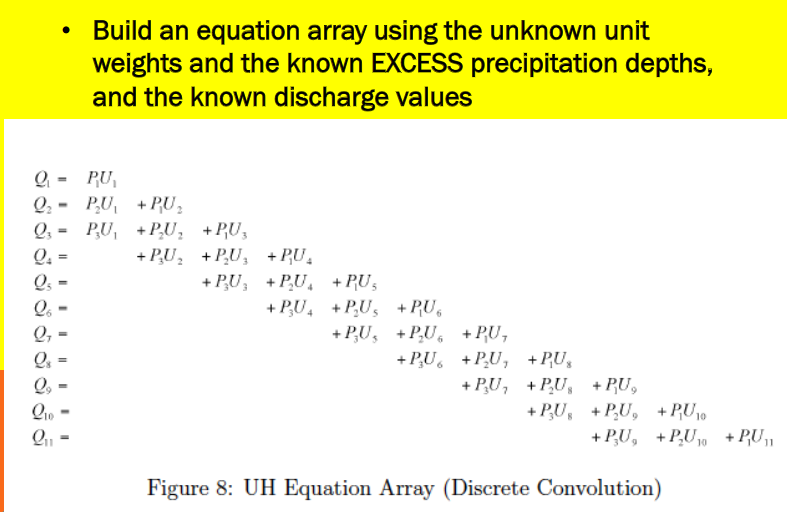
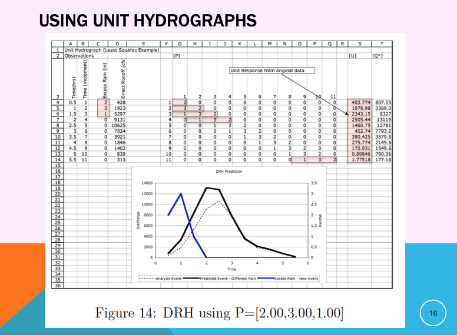
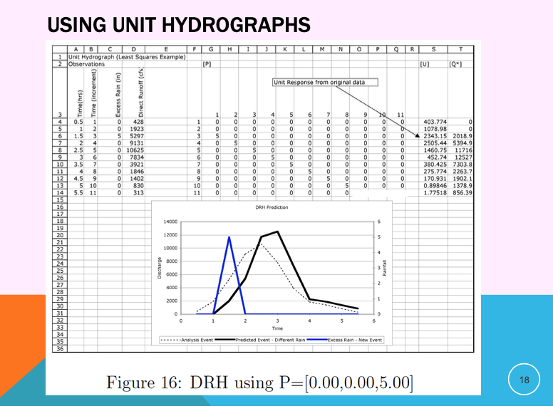
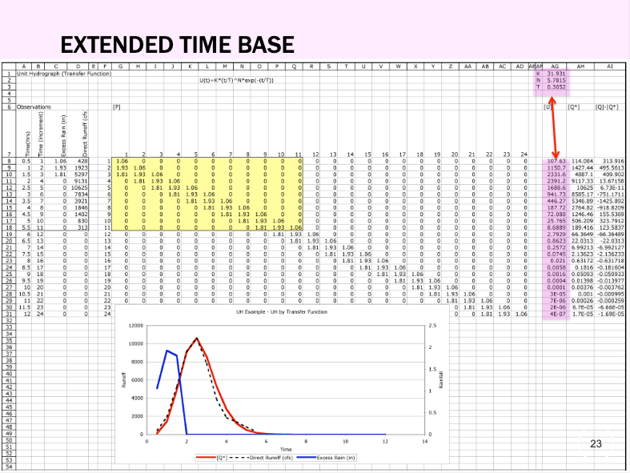
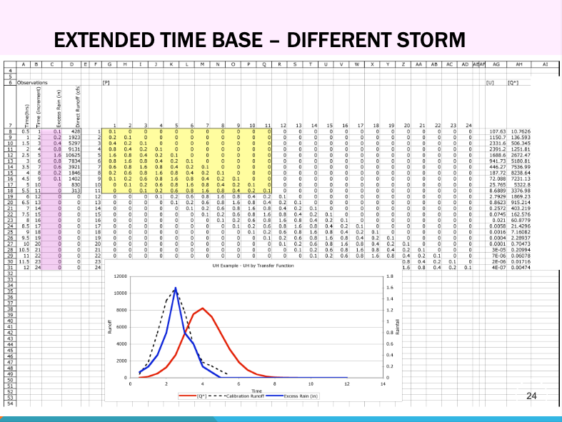

5. Rainfall-Runoff Relationships#
Course Website
Rainfall–runoff relationships are used as mathematical representations of how a watershed or drainage basin converts precipitation into runoff. It translates rainfall inputs—typically visualized as a hyetograph—into runoff outputs, shown as a hydrograph. This transformation is governed by physical and empirical processes that dictate how water moves through the landscape.
At its core, rainfall–runoff modeling seeks to answer:
“Given a certain rainfall event, how much of that water will appear as flow at the outlet of the watershed—and when?”
Basic Conceptual Flow

Rainfall enters the watershed as a time-varying signal.
Losses occur, reducing the portion of rainfall available for runoff:
Infiltration into the soil
Interception by vegetation or structures
Evapotranspiration
Storage in depressions, wetlands, or ponds
The remainder becomes excess rainfall, which supplies:
Overland flow
Interflow
Baseflow
Together, these pathways determine the shape and magnitude of the runoff hydrograph.
Modeling Approaches Rainfall–runoff models can be categorized based on complexity and intended use:
Empirical models, like the Rational Method and SCS Curve Number Method, use simplified assumptions and historical data to estimate peak discharge or runoff volume.
Conceptual models treat the watershed as a system of interconnected storages and fluxes.
Physically-based models solve conservation equations (mass, momentum) across discretized terrain, but require detailed data and high computational effort.
Engineering Importance Understanding rainfall–runoff relationships are essential for:
Designing stormwater infrastructure (culverts, channels, detention basins)
Predicting flood peaks and volumes
Managing water supply and drought impacts
Evaluating land use changes on watershed response
Readings#
Videos#
Spreadsheets#
The Rational Method - Background#
The Rational Method is one of the oldest and most widely used techniques in engineering hydrology to estimate peak runoff discharge from small watersheds, particularly in urban environments. It’s valued for its simplicity and direct application in drainage design.
Where:
\(Q_p\) = peak runoff rate (typically in cubic feet per second or cubic meters per second)
\(C\) = runoff coefficient (dimensionless)
\(i\)= rainfall intensity (in/hr or mm/hr) for a duration equal to the time of concentration
\(A\) = drainage area (acres or hectares)

Key Applications
Sizing storm sewers and culverts
Designing detention basins for small developments (using Modified Rational Method)
Estimating peak discharge for roadside ditches
Assumptions and Limitations
Assumes uniform rainfall over the area
Most appropriate for small watersheds (< 200 acres or ~80 ha)
The rainfall intensity must correspond to the time of concentration (Tc)
Note
The rational method is most reliable when used for short-duration, high-intensity storms in urbanized watersheds with impervious surfaces.
Rational Method - In Detail#
The rational method is probably applied the most often by hydraulic and drainage engineers to estimate design discharges for small drainage areas. These design discharges are used to size a variety of drainage structures for small undeveloped and developed watersheds throughout the United States.
The rational method (Kuichling 1889) is expressed as,
\(Q_p = m_0 C_{std} iA \)
where
\(Q_p\) is peak discharge at some point where flow is concentrated (an inlet to a storm sewer, a culvert, an outlet from a small watershed, … )
\(m_0\) is a dimensional conversion factor (\(\frac{1}{360} = 0.00278\) in SI units; \(1.008\) in English units).
\(C_{std}\) is a rational runoff coefficient (dimensionless) determined by the land-use characteristics in the watershed,
\(A\) is drainage area (hectares or acres), and
i is average intensity of rainfall (\(mm/h\) or \(in/h\)) of a specified frequency (probability) for a duration equal to a characteristic time, \(T_c\), of the drainage area.
In the U.S., the customary units for the rational method are cubic feet per second (cfs) for \(Q\), inches per hour (in/hr) for \(i\), and acres for \(A\). To be dimensionally consistent, a conversion factor of 1.0083 should be included to convert acre-inches per hour into cubic feet per second; however, this factor is generally neglected.
In this document, \(C_{std}\) is the standard rational runoff coefficient that relates the ratio of input volume rate \(iA\) to the output volume rate \(Q_p\).
For development of the rational method, it is assumed that:
The discharge concentrates/collects at the point of interest
The rainfall is uniform over the drainage area,
The peak rate of runoff can be reflected by the rainfall intensity averaged over a time period equal to the characteristic time3 of the drainage area,
The relative frequency (probability) of runoff is the same as the relative frequency (probability) of the rainfall used in the equation4,
The above formula implies that the peak discharge occurs when the entire area is contributing flow to the drainage outlet, that is, the peak flow will occur at the characteristic time Tc after the start of uniform rainfall. A uniform rainfall of a longer duration than Tc will not produce a greater peak flow but will only lengthen the discharge period, and
All runoff generation processes are incorporated into the runoff coefficient.
The conceptual runoff generation mechanism is illustrated in the Figure below for a continuous rainfall where discharge at the point of interest (watershed outlet) increases until an equilibrium value is reached where the excess rainfall rate and the discharge per unit area become equal. This figure in particular illustrates the fifth assumption, that is that rainfall over a period longer than \(T_c\) has no effect on the discharge in the rational method model.
For small urban drainage designs, such as storm drains, the rational method is the common method for peak flow estimation in the United States (McPherson, 1969) despite criticism for over-simplified assumptions. The widespread use of the rational method can be explained by its simplicity, entrenchment in practice, extensive coverage in the literature, and lack of comparable simple-to-use alternatives (Haan and others, 1994).
The applicable area (over which the method can be applied) is generally restricted to less than one square mile (e.g. FHWA (1980)), and in urban jurisdictions to areas to less than 20 acres (Poertner, 1974), yet the idea of a runoff coefficient could certainly be extended to large basins
Note
In this context these coefficients are not the same as the rational runoff coefficient, hence the use of the jargon “rational runoff coefficient”).
From inspection of the equation, it is evident that \(C\) is an expression of proportionality between rainfall intensity and peak discharge (flow rate). The theoretical range of values for \(C\) is between 0 and 1. The typical whole watershed \(C\) values (that is, \(C\) values representing the integrated effects of various surfaces in the watershed and other watershed properties) are listed for different general land-use conditions in various design manuals and textbooks.
An on-line \(Q_p\) calculator has links to one such table.
The Texas Hydraulic Design Manual contains a useful discussion on appliciability and use of the Rational Method in drainage design.
Time of Concentration#
The time of concentration is the crucial element of the Rational Equation (notably actually absent in an explicit sense from the equation).
The value of \(T_C\) is important in rational method for estimating rainfall intensity.
It is also used in many other hydrologic models to quantify the watershed response time.
Time of concentration \(T_C\) is the time required for an entire watershed to contribute to runoff at the point of interest for hydraulic design. It is calculated as the time for runoff to flow from the most hydraulically remote point of the drainage area to the point under investigation.
Travel time and \(T_C\) are functions of length and velocity for a particular watercourse.
A long but steep flow path with a high velocity may actually have a shorter travel time than a short but relatively flat flow path.
There may be multiple paths to consider in determining the longest travel time.
The designer must identify the flow path along which the longest travel time is likely to occur.
Various Methods to Estimate \(T_C\) include:
CMM pp. 500-501 has several formulas.
HDS-2 pp. 2-21 to 2-31 has formulas and examples.
LS pp. 196-198 has several formulas.
Some simple useful methods are examined in
The tools referenced in the above document are located below:
NRCS Upland (uses the graph pg 720 of Gupta). NRCS-Upland.xls; NRCS-Upland.xlsx
Kerby-Kirpich Kerby-Kirpich.xls;Kerby-Kirpich.xlsx
NRCS Velocity TXDOT-TIME-OF-CONCENTRATION-NRCS.xlsx
The SCS Curve Number (CN) Method - Background#
The Curve Number Method was developed by the U.S. Soil Conservation Service (now NRCS), the Curve Number (CN) Method estimates direct runoff depth from rainfall events using empirical relationships based on land use, soil type, and hydrologic condition. It’s widely used in both rural and urban watershed modeling.
The basic form of the method is:
Where:
\(Q\) = depth of direct runoff (in watershed inches or mm)
\(P\) = depth of precipitation
\(I_a\) = initial abstraction (default is \(0.2 \times S\))
\(S\) = potential maximum retention (in) \(S = \frac{1000}{CN} - 10\)
\(CN\) = Curve Number, ranging from 30–100
Curve Number Selection#
Curve numbers are determined from tables based on:
Land use and cover (e.g., forest, grassland, urban)
Soil group (A to D, from high to low infiltration capacity)
Antecedent moisture conditions
Key Applications
Estimating runoff volumes for detention and retention pond sizing
Used in watershed models like HEC-HMS, TR-55, and SWMM
Common in floodplain analysis and stormwater permitting
Note
The CN method is especially useful in moderate to large watersheds where land cover and soils vary across the basin.
Rainfall-Runoff Modeling#
A rainfall-runoff model is a mathematical model describing the rainfall–runoff relations of a rainfall catchment area, drainage basin or watershed. It produces a runoff hydrograph in response to rainfall inputs, represented by a hyetograph. In other words, the model calculates the conversion of rainfall into runoff.
In comparatively sophisticated modeling one considers the rainfall signal coming into the watershed, filtered by losses from evapotranspiration, infiltration, any water that is added to storage - what remains is the runoff.
Linear Reservoir Model#
As a starting point, consider a linear-reservoir model of the watershed. Conceptually the linear reservoir model employs the water budget for a watershed, and that discharge from the watershed is proportional to the current accumulated storage.
Starting with something like the sketch below.

One relates the discharge formula and the storage formula. The discharge formula, is where the “linear” part arises (linear in accumulated watershed depth) the constant \(\frac{1}{\alpha}\) is just some property of the watershed; \(\alpha\) is non zero.
And the storage formula is
with a substitution
Storage itself is simply the product of the accumulated watershed depth and area
Another substitution
Now we can factor out the obvious constants to obtain
Seperate, integrate, and simplify; we assume that \(P\) is some constant (otherwise the analysis is a bit more complex)
Now naturally we dont know \(\alpha\) for a watershed, hence the need for data analysis. Suppose for the sake of demonstration it is 1.0, we can simulate the anticipated discharge for a watershed (in the absence of losses)
# structural simulation need units for practical applications
import math
alpha = 1.0 #watershed discharge conversion constant
area = 10.0 #some area
pee = 1.0 #constant rain
qzero = 0 #zero initial discharge
hzero = 0 #zero initial storage
howmany = 1000
qnow = [0 for i in range(howmany)]
pnow = [0 for i in range(howmany)]
dsnow = [0 for i in range(howmany)]
time = [0 for i in range(howmany)]
deltat = 0.01 # time step value
dsnow[0]=math.inf # set first condition at infinty
for itime in range(1,howmany):
time[itime] = deltat+time[itime-1]
qnow[itime]=(area*pee*(1.0-math.exp(-time[itime]/alpha)))
pnow[itime]=(area*pee)
average_in=0.5*(pnow[itime]+pnow[itime-1])
average_out=0.5*(qnow[itime]+qnow[itime-1])
dsnow[itime]=((average_in-average_out))
import matplotlib.pyplot # the python plotting library
myfigure = matplotlib.pyplot.figure(figsize = (10,5)) # generate a object from the figure class, set aspect ratio
# Built the plot
matplotlib.pyplot.plot(time, qnow, color ='red')
matplotlib.pyplot.plot(time, pnow, color ='blue')
matplotlib.pyplot.plot(time, dsnow, color ='green')
matplotlib.pyplot.xlabel("Elapsed Time")
matplotlib.pyplot.ylabel("Runoff or Rainfall in L^3/T")
matplotlib.pyplot.title("Linear Reservoir Runoff Model \n"+"Area ="+str(area)+" alpha ="+str(alpha) )
matplotlib.pyplot.legend(["Discharge","Precipitation","Delta Storage"])
matplotlib.pyplot.show()
A interpretation of this kind of model can serve as an explaination of the NRCS CN method (but in cumulative space)
NRCS Runoff Generation Models#
The CN method is in common use and is examined here. The curve number approach is based on a volume balance. The derivation is in the National Engineering Handbook Chapter 10.
The curve number is a solution to:
where \(Q\) is the cumulative runoff (integral of the hydrograph) in watershed depth (i.e. Discharge/Area), P is the cumulative rainfall (integral of the hyetograph). Drainage area is used to make units consistent; either divide Q by area to get a depth, or multiply P by area to get volume). S is the retention (like a storage term).
The curve number, \(CN\), is simply a transformation of \(S\)
The \(CN\) values for a large number of land coverages (hydrologic soil complex coverage number; or runoff curve number) were tabulated by the NRCS many years ago. It is of note that the method was intended for agricultural use.
Equations similar in structure to the NRCS equations above can be constructed by assuming the watershed operates as a linear reservoir and such an analysis provides some understanding of \(CN\) (as other than just a tabulation). When viewed in such a fashion the \(CN\) is like a response or residence time parameter (\(\alpha\) in our linear reservoir model above) and represents how long in dimensionless time it takes the watershed to reach an equilibrium storage condition where the precipitation that enters leaves. Large values (90+) are “fast” responding watersheds, small values (50-ish) are “slow” responding watersheds.
The figure below is the typical graphical representation from NRCS sources.

Now lets demonstrate that structurally the \(CN\) model is explainable as a particular interpretation of a linear reservoir model.
Start with linear reservoir model, but include some abstractions. Show in cumulative space to get CN-type model.
Interpretation of NRCS CN as a linear reservoir model#
Assume a watershed can be represented as a linear reservoir, where the discharge is proportional to accumulated storage. Using the \(CN\) variable names and definitions it is possible to construct a discharge function that is a decaying exponential. The decay rate conveys similar information as the curve number, that is it relates how much cumulative precipitation must occur before the retention is satisfied and the ratio of actual to potential retention becomes one.
First the variable names associated with the Figure below and their definitions from chapter 10, NEH.

\(I_a\) is the initial abstraction - it represents input rainfall that never appears as runoff and is removed at the beginning of an event.
\(F_a\) is the watershed retention - it represents the depth of water retained on the watershed after runoff begins. In our previous model it plays the same role as \(\bar h\)
\(S\) is the potential watershed retention after runoff begins - it represents the maximum possible depth of of water retained on the watershed if the rain goes on forever.
\(Q\) is the actual runoff depth.
\(P\) is the actual rainfall depth.
The figure above is a sketch of a watershed as a reservoir. The area is \(A\), precipitation rate is \(i\), the initial abstraction is \(I_a\) and the actual retention (accumulated depth on the watershed in excess of \(I_a\)) is \(F_a\). The discharge in volume units is \(qA\). If one writes a mass balance on the watershed in terms of \(F_a\), ASSUMING the initial abstraction is already satisfied (as in the NRCS definition of \(F_a\) above), then the resulting equation is
Normalizing by the constant watershed area
The units of precipitation and discharge are now \(\frac{L}{T}\) (depth per unit time). The units of accumulated depth are length (thus the time derivative is L/T). If we ASSUME a linear response, that is the specific discharge is proportional to accumulated depth (\(F_a\)) we can postulate a model for the discharge as
The term \(\alpha\) is some non-zero constant that reflects the discharge from the watershed as some proportion of accumulated depth.
Now substitute into the mass balance and solve for \(F_a\) and ASSUME that precipitation rate is a constant value one can arrive at:
In this formula time begins when \(I_a\) is satisfied.
Now examine the definitions of \(P\) and \(Q\) (or \(P_e\)) in the NRCS documents. By defintion:
Now construct a plot (simulation) that plots \(Q\) versus \(P\) for different values of alpha (plus an equal value line) we have
# structural simulation need units for practical applications
import math
howmany = 1000
alpha = 1 #watershed discharge conversion constant
peein = 1.0
abstraction = 0.2
retention = 0.0
maxretention = 1.0
def qfunc(inflow,time,alpha):
qfunc = inflow*(1.0-math.exp(-time/alpha))
return(qfunc)
qnow = [0 for i in range(howmany)]
pnow = [0 for i in range(howmany)]
rnow = [0 for i in range(howmany)]
time = [0 for i in range(howmany)]
deltat = 0.01 # time step value
# time zero values
qnow[0]=peein*time[0]+peein*alpha*math.exp(-time[0]/alpha)-peein*alpha
for itime in range(1,howmany):
time[itime] = deltat+time[itime-1]
qnow[itime]=peein*time[itime]+peein*alpha*math.exp(-time[itime]/alpha)-peein*alpha
rnow[itime]=alpha*qfunc(peein,time[itime],alpha)
pnow[itime]=peein*time[itime]+abstraction+rnow[itime]
import matplotlib.pyplot # the python plotting library
myfigure = matplotlib.pyplot.figure(figsize = (10,5)) # generate a object from the figure class, set aspect ratio
# Built the plot
matplotlib.pyplot.plot(pnow, pnow, color ='blue')
matplotlib.pyplot.plot(pnow, qnow, color ='red')
#matplotlib.pyplot.plot(time, dsnow, color ='green')
matplotlib.pyplot.xlabel("Cumulative Precipitation L")
matplotlib.pyplot.ylabel("Cumulative Runoff L")
matplotlib.pyplot.title("Linear Reservoir Runoff Model \n"+"Max Retention ="+str(maxretention)+
" Initial Abstraction ="+str(abstraction)+"Precipitation Rate ="+str(peein)+" alpha ="+str(alpha) )
matplotlib.pyplot.legend(["alpha < 0.001","alpha = "+str(alpha),"Delta Storage"])
matplotlib.pyplot.show()

Now if we compare the appearance of the simulation figure to the NRCS chart we can observe that the charts convey the same kinds of curves, specifically the amount of precipitation accumulation required to produce constant runoff, as well as the conversion ratio between observed cumulative precipitation and observed cumulative runoff. In the case of the linear-reservoir model, the information is conveyed by the parameter \(\alpha\) which dimensionally is a residence time, while the curve number \(CN\) plays a similar role in the NRCS methodology.
A bit more examination and we can conjecture:
\(\alpha = \frac{100-CN}{10}\) will generate identical looking curves to the NRCS charts
\(i\alpha = S\) thus the product of the residence time and intensity is the maximum potential retention.
Runoff starts (in the time domain) at \(t_r = I_a = \frac{\alpha}{5}\)
So lets modify the script to reflect this conjecture
# structural simulation need units for practical applications
import math
howmany = 1000
CN = 90
alpha = (100-CN)/10 #watershed discharge conversion constant
peein = 1.0
abstraction = 0.2
retention = 0.0
maxretention = 1.0
def qfunc(inflow,time,alpha):
qfunc = inflow*(1.0-math.exp(-time/alpha))
return(qfunc)
qnow = [0 for i in range(howmany)]
pnow = [0 for i in range(howmany)]
rnow = [0 for i in range(howmany)]
time = [0 for i in range(howmany)]
deltat = 0.01 # time step value
# time zero values
qnow[0]=peein*time[0]+peein*alpha*math.exp(-time[0]/alpha)-peein*alpha
for itime in range(1,howmany):
time[itime] = deltat+time[itime-1]
qnow[itime]=peein*time[itime]+peein*alpha*math.exp(-time[itime]/alpha)-peein*alpha
rnow[itime]=alpha*qfunc(peein,time[itime],alpha)
pnow[itime]=peein*time[itime]+abstraction+rnow[itime]
import matplotlib.pyplot # the python plotting library
myfigure = matplotlib.pyplot.figure(figsize = (10,5)) # generate a object from the figure class, set aspect ratio
# Built the plot
matplotlib.pyplot.plot(pnow, pnow, color ='blue')
matplotlib.pyplot.plot(pnow, qnow, color ='red')
#matplotlib.pyplot.plot(time, dsnow, color ='green')
matplotlib.pyplot.xlabel("Cumulative Precipitation L")
matplotlib.pyplot.ylabel("Cumulative Runoff L")
matplotlib.pyplot.title("Linear Reservoir Runoff Model \n"+"Max Retention ="+str(maxretention)+
" Initial Abstraction ="+str(abstraction)+"Precipitation Rate ="+str(peein)+" alpha ="+str(alpha) )
matplotlib.pyplot.legend(["CN = 100","CN = "+str(CN),"Delta Storage"])
matplotlib.pyplot.show()
so in practice we don’t use the \(CN\) model as a linear reservoir. It is strictly treated as a runoff generation procedure - its useful and practical, but is built on limited assumptions.
The \(CN\) values are tabulated in many locations including:
WSS After an AOI is delineated, the soils property tab will return CN values associated with each soil texture.
NEH Chapter 9 Tables of CN for different soil textures
Texas HDM Similar to above, with some probability and geographic corrections.
Note
The \(CN\) method using composite curve numbers is one of the suggested methods to consider in the Hardin Creek design/analysis project. While by no means the bestest, its not bad for the application and relatively easy to parameterize and is built-in to HEC-HMS the design/analysis tool you will use.
Concept of Hydrograph, Peak(s), and Baseflow#
A hydrograph is a time series plot that shows how streamflow or discharge varies over time at a particular point in a watershed, typically following a rainfall event. It reflects the integrated response of a watershed to precipitation, modulated by surface and subsurface flow processes.

The idealized hydrograph is divided into:
Rising limb: where discharge increases rapidly due to incoming runoff
Peak flow: the highest point of the hydrograph, representing the maximum discharge
Recession limb: the gradual decrease in flow as runoff and baseflow subside
In engineering hydrology, peak flow estimation is essential for:
Designing culverts, bridges, detention ponds
Urban drainage systems
Flood risk assessments
In engineering hydrology, entire hydrograph estimation is important for
Modeling the temporal distribution of runoff for detention and retention system design
Assessing watershed response for hydrologic and hydraulic simulation models
Supporting water quality analysis and long-term water resource planning
The hydrograph pictured also has a baseflow component – Flow in the absence of a storm, often contributed by groundwater discharge or delayed interflow. – During storm events, total streamflow consists of both baseflow and stormflow (direct runoff) components. – To estimate peak flow or the entire storm hydrograph, it is important to separate the baseflow from the observed hydrograph. – This separation is essential for understanding rainfall-runoff relationships and for use in modeling, design, and watershed assessments.
Warning
The hydrographs shown in this chapter assume that baseflow separation has already been completed. That means the flow values plotted and analyzed represent only the storm-related (direct) runoff, not the total streamflow at the gage. In technical terms, these are direct runoff hydrographs.
In real-world applications, observed streamflow is a combination of baseflow (groundwater contribution) and direct runoff (from precipitation events). Removing baseflow is an essential step when estimating watershed response, runoff volume, or peak flow from rainfall events.
The methods used to perform this baseflow separation—whether graphical or computational—are not covered here. You will learn these techniques in the next chapter, where we examine several standard approaches and their implications on hydrograph interpretation.
5.1 Unit Hydrographs#
A Unit Hydrograph (UH) is a special type of hydrograph function that represents the response (in discharge) of a watershed to 1 inch (or 1 mm) of effective rainfall uniformly distributed over the basin for a specified duration.
It is a model of how excess rainfall (after losses like infiltration) turns into runoff at the watershed outlet.
“Excess” means we’ve already subtracted out losses using a loss model.
It helps us see how water moves from where it falls to where it exits—this is called time redistribution.
You can simply think of it as a response function that turns rainfall into runoff.
L. K. Sherman (1932) introduced this idea and it became a key tool in hydrology.
Note
Once a unit hydrograph is known, it can be scaled and convolved with rainfall excess to predict runoff hydrographs for any storm, allowing flexible design under varied rainfall conditions.
Unit Hydrograph Concepts
The unit hydrograph is a response function that transforms the distributed input to the outlet, accounting for transit time to get from remote parts of the watershed to the outlet.
Another way to picture it is the stack of pizza boxes model of the watershed

The time basis matters. In the figure below a single input of time length D produces the outlet response shown. The unit hydrograph is the kernel function that makes the transformation.
Unit hydrograph models contain a few common themes, first input hyetograph, then a loss model which are combined to produce the excess precipitation signal

The excess precipitation signal has the same total volume as the direct ruoff
And the unit hydrograph as a transfer function maps the excess hyetograph to the outlet

The storm induced flow is added to any baseflow to produce the total hydrograph.

Principal Unit Hydrograph Assumptions#
Direct runoff duration is the same for all uniform-intensity storms of the same duration:

If two storms both last, say, 2 hours and have uniform rainfall intensity (rain falls at a constant rate), the resulting direct runoff hydrograph (i.e., the storm response at the outlet) will cover the same time window.
Even if one storm drops 1 cm and another drops 2 cm, their runoff hydrographs will start and end at the same times.
The reason is that the unit hydrograph depends on how long the rainfall lasts, not how much falls.
So, duration of the direct runoff response is determined solely by the duration of the excess precipitation, not its depth.
Two excess hyetographs of the same duration will produce direct runoff hydrographs of the same duration but different magnitudes This reflects linearity of the unit hydrograph system:

Imagine two storms that each last 3 hours, but one storm has 1 cm excess rainfall, and the other has 2 cm.
The shape and time span of the resulting hydrographs are the same.
But the runoff flow rates (ordinates of the hydrograph) will be scaled proportionally to the volume (or depth) of the excess rainfall.
For instance, if the first storm produces a peak of 10 m³/s, the second will produce a peak of 20 m³/s.
The runoff hydrograph is directly proportional to the volume of excess rainfall, but its duration and shape in time stay the same.
The time distribution of direct runoff is independent of prior storms (no memory). This assumption reflects the principle of superposition and linearity:

The watershed responds only to the current excess precipitation—there is no “memory” of what happened before.
So if you have a new storm today, the runoff it creates depends only on today’s excess rainfall, not on whether it also rained yesterday.
This is true as long as the watershed is assumed to be linear and time-invariant, which is a key assumption in unit hydrograph theory.
In reality, soils and storage might retain some effects, but for unit hydrograph models, past rainfall doesn’t affect current response.
The watershed behaves like a memoryless system in unit hydrograph theory: the runoff at any time is determined only by current and recent rainfall, not rainfall from previous, far back in time, unrelated events.
Timing#
Strictly speaking, each unit hydrograph has a particular duration associated with it, D in the diagram
That duration must coincide with the time step size used in discrete aggregation
Thus a D-hour unit hydrograph is a response to a D-hour “pulse” of excess precipitation.
The flow associated with that response is reported every D-hours until there is no further response (\(T_D\) in the diagram)
Each watershed has a characteristic response time, \(T_{lag}\) and \(T_P\) in the diagram. The characteristic time of the watershed is related to physical characteristics of the watershed contributing area, slope, etc. The time step size for aggregation must the same as the duration, and the time-to-peak for the watershed must be an integer multiple of that value.
Note
These requirements are coded into HEC-HMS which will issue warnings as these requirements are violated. As a designer you need to decide whether to ignore the warnings and proceede or adjust inputs and parameters to satisfy the various rules of the signal processing.
If you are using SWMM, there is less warning structure - using UH in SWMM is fine; but the user must be able to detect failed input reqirements themselves - there is no internal checking pre-se (SWMM is a hydraulics model, that approximates hydrology whereas HMS is a hydrologic model that can do some simplified hydraulics)
The Unit Hydrograph as a Convolution Kernel#
The unit hydrograph (UH) acts as a kernel function in a convolution integral, transforming excess rainfall distributed over time into direct runoff at the watershed outlet.
Continuous Formulation#
In continuous time, the transformation from rainfall to runoff is expressed as:
Here:
\(Q(t)\) is the direct runoff rate at time
\(A\) is the drainage area,
\(r(τ)\) is the excess rainfall rate at past time
\(f(t−τ)\) is the unit hydrograph kernel, which describes how rainfall occurring at time \(𝜏\) contributes to runoff at later time \(t\).
The kernel redistributes rainfall over time, incorporating travel time delays from all points in the watershed to the outlet. In the continuous form, the UH kernel is usually normalized, meaning it integrates to 1. That way, runoff units match rainfall depth units, and the area \(A\) scales the total runoff volume.
Discrete Formulation#
In practical hydrologic modeling, rainfall and runoff are measured in time steps. The discrete form of the convolution becomes:
In the above,
\(Q_n\) is the direct runoff at time step \(n\),
\(P_m\) is the excess precipitation depth at time step \(m\),
\(U_{n-m}\) is the unit hydrograph ordinate, indicating how much runoff occurs at time \(n\) due to rainfall at time \(m\).
This formulation assumes:
Time is broken into equal intervals,
Rainfall at each time step contributes to future runoff according to the weights of the UH.
In the discrete case, the area of the watershed is embedded in the UH ordinates. This means that rainfall is in depth units (e.g., mm or inches), and runoff are in flow units (e.g., CFS or CMS) , and the UH itself gives direct runoff rate per unit excess rainfall.
The convolution approach reflects two key assumptions of the unit hydrograph theory:
Linearity: Doubling the rainfall doubles the runoff.
Time invariance: The watershed responds the same way to rainfall regardless of when it occurs.
Together, these allow us to superimpose the effects of multiple rainfall inputs and predict runoff using past input data, efficiently and with reasonable accuracy.

Synthetic vs. Observed Unit Hydrographs#
Unit hydrographs can be derived in two principal ways:
Observed Unit Hydrographs#
These are generated from real rainfall-runoff events in gauged watersheds. They reflect the unique topography, land use, and hydrologic response of the basin.
Advantages:
Highly accurate for the basin where they’re developed
Reflects actual watershed behavior
Limitations:
Requires extensive rainfall and flow records
Difficult to generalize to other locations
Building a Unit Hydrograph from Observations#
Several methods can be used to derive a unit hydrograph from observed rainfall-runoff data. Each approach attempts to solve a system that relates known rainfall inputs (excess hyetograph) to observed direct runoff at the outlet.
Back-Substitution#




In this approach, we use the discrete convolution equation and known data to back out the unit hydrograph ordinates:
If the linear system is square (same number of equations as unknowns), full-rank, and has a non-zero diagonal, then the unit hydrograph ordinates can be solved using direct methods.
This is often better than manual back-substitution, which is error-prone and tedious.
In many real-world cases, the system is over-determined—meaning there are more equations than unknowns. In such cases, a simple solution may not exist, and an optimization method is required.

Least-Squares#
This method is well-suited to over-determined systems.

It finds the best-fit unit hydrograph that minimizes the squared error between observed and predicted runoff:
May occasionally produce negative weights, especially for later times where data is sparse or noisy.
These negative values are typically small and occur late in the hydrograph; while not ideal, they can often be corrected or constrained in post-processing.
The least squares method treats the problem like a regression problem, using rainfall inputs as predictors and runoff outputs as the response.
It is easy to implement in a spreadsheet for small-to-moderate datasets.

Linear Programming#
Linear programming methods can enforce constraints (e.g., non-negative weights), making them more robust in some situations. These methods are beyond the scope of this course, but are referenced in assigned readings for students who wish to explore further.
What are Unit Hydrographs used for?#
Unit hydrographs are valuable tools in hydrology for predicting runoff from future storms, especially when we can reasonably assume the watershed responds linearly and consistently over time.
Their primary use is to estimate the direct runoff hydrograph at the watershed outlet, based on an expected excess rainfall hyetograph of known duration.
If a new storm is expected to last the same duration as the unit hydrograph (e.g., 3 hours), we can use scaling and superposition to predict runoff:
Multiply the unit hydrograph by the magnitude (depth) of excess rainfall.
Shift and add the scaled versions to match the timing of the new rainfall pattern.
This allows us to predict runoff without having to rerun a full physical model of the watershed.
If the new storm has the same shape (uniform intensity), but a different depth, we scale the unit hydrograph proportionally.
For example, 2 cm of excess rainfall produces twice the runoff of a 1 cm storm.
The shape and timing of the hydrograph remain the same.
If the new storm lasts the same amount of time but has uneven rainfall distribution across the duration, we break it into increments:
Apply the unit hydrograph to each time step of the excess hyetograph.
Use discrete convolution to sum the resulting shifted hydrographs.
The result is a new hydrograph reflecting the storm’s unique rainfall pattern.
Some illustrative examples using the UH just determined above




Unit hydrographs are most useful when:
The storm duration matches the UH duration,
Watershed behavior is assumed linear and time-invariant,
We want a quick, practical method to estimate direct runoff without complex modeling.
They are widely employed in design storms, flood estimation, and runoff forecasting.
Parametric Unit Hydrographs#
Instead of using a table of discrete unit hydrograph weights, we can represent the unit hydrograph as a mathematical function whose shape is controlled by one or more parameters. These are called parametric unit hydrographs.


Parametric unit hydrographs retain the same purpose—mapping excess rainfall to direct runoff—but offer greater flexibility and compactness by reducing the number of variables to a few key shape-controlling parameters.
Why Use Parametric Unit Hydrographs?#
Fewer values to store, interpret, or manipulate.
Easy to scale or extend to longer or shorter storm durations.
When parameters are tied to physical watershed characteristics (such as slope, channel length, soil type, or shape), the result is a synthetic unit hydrograph.
What is a Synthetic Unit Hydrograph?#
A synthetic unit hydrograph estimates runoff behavior without observed rainfall-runoff data. Instead, it is built by relating hydrograph shape parameters to measurable watershed properties:
Average slope
Length of main channel
Drainage area
Land use or soil group
This makes synthetic methods particularly useful for ungauged watersheds or planning studies where measured runoff data are unavailable.

Extending the Time Base#
When the storm duration is much longer than the original UH duration, the unit hydrograph must be extended in time.
For parametric unit hydrographs, this is relatively simple—just evaluate the function over a longer time interval and adjust accordingly.


For classically derived unit hydrographs (based on discrete weights from observed events), the S-curve method is commonly used to extend the time base. This involves cumulative summation and shifting techniques to build longer-duration responses.
Tip
In practice, most hydrologic modeling software includes built-in parametric UH options—so modern workflows rarely require manual extension unless you’re working with historical or custom unit hydrographs.
Synthetic Unit Hydrographs#
When direct streamflow data is unavailable, unit hydrographs can be estimated—or synthesized—using relationships that depend on measurable watershed characteristics such as:
Drainage area
Average slope
Main stream/channel length
Time of concentration (or other characteristic time derived from a map)
These methods are designed to provide reasonable approximations of watershed response, especially when field data is limited or nonexistent.
Common methods include:
Snyder’s Method
SCS Dimensionless Unit Hydrograph (DUH)
Clark Method
USGS Regional Regression Models
Advantages
Necessary for ungauged watersheds (or a physics-based model)
Easily applied across large regions using GIS-derived parameters
Enables early-stage design and planning before detailed data collection
Often built into hydrologic modeling tools and design manuals
Limitations
May oversimplify complex watershed behavior
Accuracy depends on the quality of empirical relationships
Less reliable than hydrographs developed from measured rainfall-runoff events
Assumes uniform rainfall and simplified watershed geometry
Note
Synthetic unit hydrographs are indispensable in regions with limited hydrologic monitoring. They allow engineers to estimate flood response and runoff volumes during planning, screening, and feasibility analysis, especially for rural or developing areas where instrumentation is sparse.
Modified Rational Method#
The rational method is used to estimate peak discharges for sizing drainage structures, such as storm drains and culverts. The modified rational method (MRM) is an extension of the rational method to produce simple runoff hydrographs. The MRM is often called the rational hydrograph method. Application of the MRM produces a runoff hydrograph and runoff volume in contrast to application of the rational method, which produces only a peak design discharge (Qp).
The hydrograph developed from application of the MRM is a special case of the unit hydrograph method and is sometimes termed the modified rational unit hydrograph (MRUH); as a unit hydrograph, the MRUH can be applied to nonuniform rainfall distributions. Furthermore, the MRUH can be used on watersheds with drainage areas in excess of the typical limit for application of the rational method. Application of the MRUH method involves two steps: (1) determination of rainfall loss using rational method concept, that is, use of the runoff coefficient, and (2) determination of the MRUH using drainage area (A) and time of concentration (Tc) as input parameters, in addition to applying the procedure of unit hydrograph convolution.
Tc and runoff coefficients, C, can be estimated by a variety of methods.
References on Modified Rational Method
Modified Rational Method Hydrograph Generator#
This script performs discrete convolution to generate a direct runoff hydrograph from a hyetograph for a drainage area using the modified rational method unit-hydrograph approach (cite).
The direct runoff hydrograph is computed using a convolution integral:
where
\(p(t)\) is the excess rainfall hyetograph
\(u(t)\) is the drainage area response kernel (a unit hydrograph)
\(Q(t)\) is the direct runoff hydrograph
The response kernel for the modified rational method is
where
\(A\) is the contributing drainage area
\(T_c\) is the time of concentration
The excess rainfall hyetograph is obtained from the precipitation input signal as
where
\(C\) is the rational equation runoff coefficient
\(P(t)\) is a rainfall hyetograph (design storm)
The example script below illustrates the calculations for an NRCS Type 2 design storm, the other design storms are included and a simple change in storm type in the interp1d(minutes, type2, kind='linear') function call (i.e. change type2 to another type in the program). Alternatively the analyst could supply any hyetograph they choose, but would have to fuss a bit with the array lengths.
The script has several prototype functions:
Convolveis the discrete convolution integrator
kernelis the \(u(t)\) kernel function above
ModRatis the function that actually computes the time-shifted response kernel, scales inputs and outputs to produce dimensional outputs
After these prototype functions is a block that generates an input excess rainfall hyetograph. The next block is the input block, the actual function call to ModRat, some mass balance summary calculations.
Finally the plotting section prepares graphical output, reports the inputs, summary values in the chart title, and then charts the input hyetograph (an excess hyetograph, losses are already removed), and the direct runoff hydrograph.
import numpy as np
import matplotlib.pyplot as plt
from scipy.interpolate import interp1d
# Input Parameters
PT = 6.96 # Total storm depth in inches
area = 181 # Drainage area in acres
C = 0.65 # Runoff coefficient
Tc = 45 # Time of concentration in minutes
hyetType = 'type2' # Options: 'type1', 'type1A', 'type2', 'type3', 'user'
def get_hyetograph(hyetType, PT):
hour = [0,2,4,6,7,8,8.5,9,9.5,9.75,10,10.5,11,11.5,11.75,12,12.5,13.0,13.6,14,16,20,24,48]
minutes = [i*60 for i in hour]
hyets = {
'type1': [0,0.035,0.076,0.125,0.156,0.194,0.219,0.254,0.303,0.362,0.515,0.583,0.624,0.654,0.669,0.682,0.706,0.727,0.748,0.767,0.83,0.926,1,1],
'type1A': [0,0.05,0.116,0.206,0.268,0.425,0.48,0.52,0.55,0.564,0.577,0.601,0.624,0.645,0.655,0.664,0.683,0.701,0.719,0.736,0.8,0.906,1,1],
'type2': [0,0.022,0.048,0.08,0.098,0.12,0.133,0.147,0.163,0.172,0.181,0.204,0.235,0.283,0.357,0.663,0.735,0.772,0.799,0.82,0.88,0.952,1,1],
'type3': [0,0.02,0.043,0.072,0.089,0.115,0.13,0.148,0.167,0.178,0.189,0.216,0.25,0.298,0.339,0.5,0.702,0.751,0.785,0.811,0.886,0.957,1,1],
'user': [0,0,0.4285,0.8571,1.0,1.0,1.0,1.0] # Adjust time scaling below if needed
}
if hyetType == 'user':
user_time = [0,7,8,9,9.3333,10,24,48]
minutes = [i*60 for i in user_time]
hyet = hyets['user']
else:
hyet = hyets.get(hyetType)
f = interp1d(minutes, hyet, kind='linear')
t24 = np.arange(0, 2881) # 48 hours in minutes
depth = PT * f(t24) # Scaled cumulative rainfall depth
intensity = np.diff(np.insert(depth, 0, 0)) * 60 # in/hr
return t24, intensity, depth
def kernel(time, area, Tc):
return area/Tc if time <= Tc else 0.0
def Convolve(excitation, kernel):
duration = len(excitation)
response = np.zeros(duration)
for i in range(duration):
for j in range(i, duration-1):
response[j] += excitation[i] * kernel[(j - i) + 1]
return response
def ModRat(area, C, precipitation, time, Tc):
excess = C * np.array(precipitation)
unitgraph = np.array([kernel(t, area, Tc) for t in time])
unitgraph /= unitgraph.sum()
flow = Convolve(excess, unitgraph)
flow = area * flow
return flow
t24, r24, d24 = get_hyetograph(hyetType, PT)
result = ModRat(area, C, r24, t24, Tc)
# Summary values
peakQ = max(result)
totalQ = np.sum(result) * 60 / 43560 # cfs to acre-feet
totalR = C * d24[-1] * (1/12) * area # inches to feet to acre-feet
massE = (totalR - totalQ) / totalR
def plot_hydrograph(t24, r24, result, PT, C, Tc, area, hyetType, peakQ, totalQ, totalR, massE):
labels = {
'type1': 'SCS Type 1',
'type1A': 'SCS Type 1A',
'type2': 'SCS Type 2',
'type3': 'SCS Type 3',
'user': 'User Defined'
}
desc = labels.get(hyetType, 'Unknown')
title = (
f"Direct Runoff Hydrograph – Modified Rational Method\n\n"
f"Hyetograph Type: {desc}\n"
f"Area: {area:.1f} acres | Storm Depth: {PT:.2f} in | C: {C:.2f} | Tc: {Tc:.1f} min\n"
f"Peak Q: {peakQ:.1f} cfs | Q total: {totalQ:.2f} af | xsR total: {totalR:.2f} af\n"
f"Mass Balance Error: {massE*100:.2f}%"
)
fig, ax1 = plt.subplots(figsize=(10, 6))
ax1.step(t24, r24, color='blue', label='Rainfall Intensity (in/hr)')
ax1.set_ylabel('Rainfall Intensity (in/hr)', color='blue')
ax1.tick_params(axis='y', labelcolor='blue')
ax1.set_xlabel('Time (minutes)')
ax1.grid(True)
ax2 = ax1.twinx()
ax2.step(t24, result, color='red', label='Runoff Discharge (cfs)')
ax2.set_ylabel('Runoff Discharge (cfs)', color='red')
ax2.tick_params(axis='y', labelcolor='red')
fig.suptitle(title, fontsize=10, ha='left', x=0.01, wrap=True)
fig.tight_layout(rect=[0, 0, 1, 0.93])
plt.show()
The code block below actually performs the simulation.
plot_hydrograph(t24, r24, result, PT, C, Tc, area, hyetType, peakQ, totalQ, totalR, massE)
Exercise(s)#
ce3354-es5-2025-2.pdf Rainfall-runoff using modified rational and unit hydrograph methods